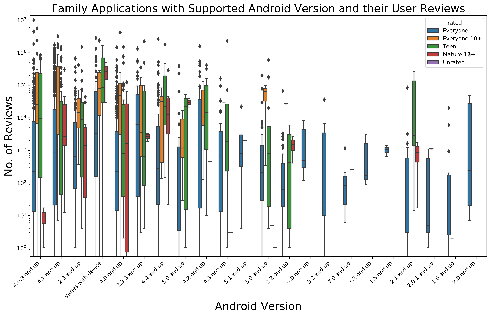
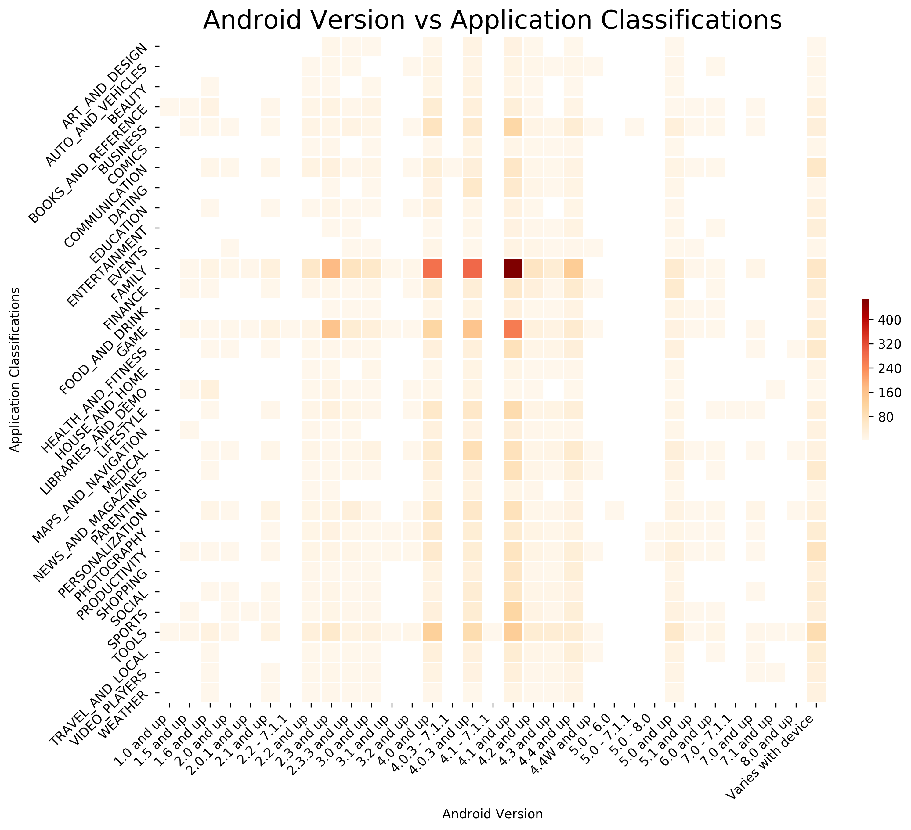
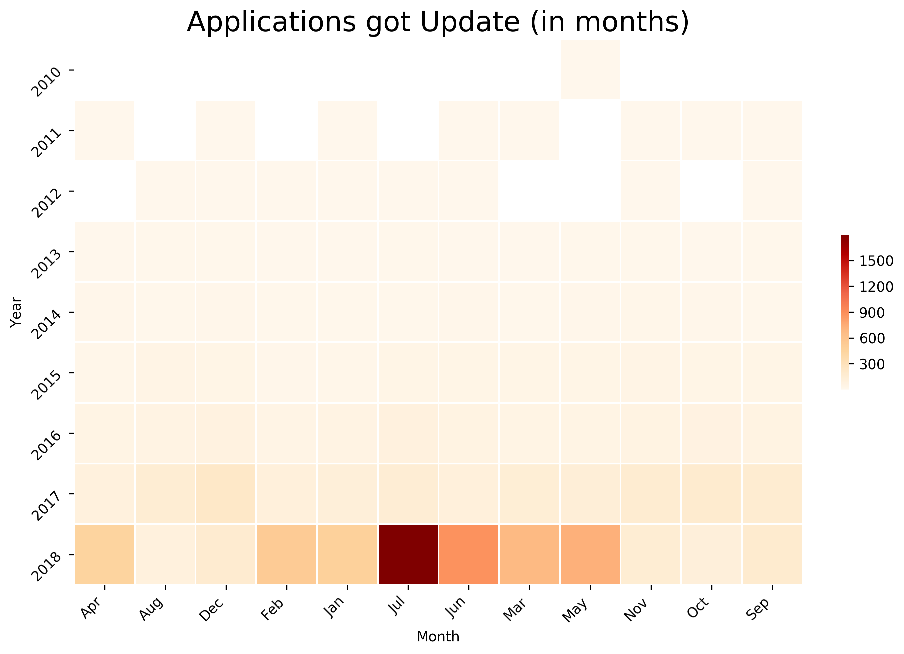
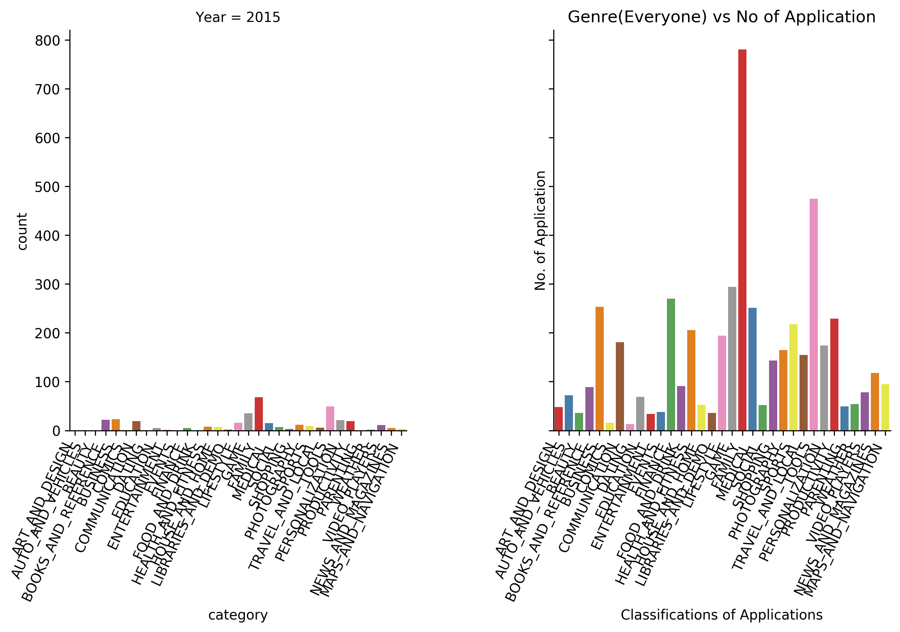

class: center, middle # Group 1 - CMSC 6950 - Google Play Store Analysis Khosh Raftar Nouri, Aida (akhoshraftar) Salcedo, Carlos (cdsalcedo) Sarker, Sourav (souravs) Yazdanpanah, Fatemeh (fyazdanpanah) --- # Agenda 1. Introduction 2. Deep-dive 3. ... --- # Project Objectives 1. To analyze the Play Store App data 2. To determine app trends --- # Summary <img src="./Summary_figure.png" alt="" id="slide_img1"> --- # Category <img src="./category_figure.png" alt="" id="slide_img2"> --- # Rated <img src="./rated_figure.png" alt="" id="slide_img3"> --- # Rating <img src="./rating_figure.png" alt="" id="slide_img4"> --- # Min. Android Supported Version <img src="./osVer_figure.png" alt="" id="slide_img5"> --- <object width="100%" height="100%" type="text/html" data="./pie.html" border="1" > </object> --- <object width="100%" height="100%" type="text/html" data="./jitter.html" border="1"> </object> ---  --- <img src="./swarm_plot.png" alt="" id="slide_img6" width="100%" height="100%"> --- <img src="./mean_plot.png" alt="" id="slide_img7" width="100%" height="100%"> ---  ---  --- <img src="./counter_plot.png" alt="" id="slide_img11" width="100%" height="100%"> ---  --- # Installation ```bash Project/ ├── checkfs.sh # Plan B - if download doesn't work ├── Data/ ├── makefile # For installation Method 2 ├── OrigData/ # Plan B - if download doesn't work │ ├── googleplaystore.csv │ ├── googleplaystore_user_reviews.csv │ └── license.txt ├── Pipfile # For installation Method 2 ├── Pipfile.lock # For installation Method 2 ├── README.md # Instructions for Installation └── requirements.txt # For installation Method 1 ``` --- # The makefile ```bash .PHONY: all newenv basesetup baseclean bashrun download clean all: newenv baseclean basesetup newenv: pip install --user pipenv pipenv install basesetup: baseclean pipenv run python3 histograms.py -i ./Data/cleanData.csv -d baseclean: download pipenv run python3 cleandata.py -o ./Data/cleanData.csv bashrun: /bin/bash checkfs.sh download: pipenv run python3 download.py -u -o ./Data ``` --- # Python Scripts download.py == Downloads data directly from Kaggle ```bash download.py [-h] [-u] [-o OUTPUT]``` cleandata.py == Cleans the data so that it can be processed ```bash cleandata.py [-h] [-a] [-o OUTPUT]``` histograms.py == Generates a preview of the Data ```bash histograms.py [-h] [-i INPUT] [-d] [-g] [-v | -q] [-s SPECIFIC | -a]``` test.py == Tests the Kaggle API ```bash py.test test.py``` --- class: center, middle # Thank you